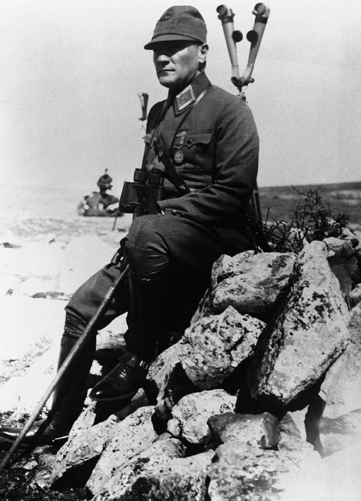

Sıralama Seçeneği:
10 Gün Listelendi
1. BÖLÜM
30 AĞUSTOS 1922
Millî Mücadele Dönemi

🔍
Büyük Ekranda İncele (Zoom)
🏛️ Orijinal Tarihî Belge / Fotoğraf
ℹ️
Etem Temel'in Kocatepe fotoğrafı.
Kaynak: Türk Tarih Kurumu
İlgili Orijinal Arşiv Görselleri:
💬 Sınıfa Sor! (Tartışma ve Düşünme Sorusu)
30 AĞUSTOS ZAFER BAYRAMI
🎯 Tarihî Önemi & Ders Kazanımları (Öğrencilerin Not Alacağı Noktalar)
🎯
Sınıf İçi Ölçme ve Değerlendirme Alanı
Öğrendiklerinizi pekiştirmek için aşağıdaki 3 etkinlikten birini seçin.
🧩 Tarih ve Olay Eşleştirme Etkinliği
Sol sütundan bir tarihî günü seçin, ardından sağ sütundaki doğru açıklamasıyla eşleştirin.
Eşleşen: 0 / 10
1. Tarihî Günler (Seçiniz)
2. Tarihî Önemi ve Anlamı (Eşleştiriniz)
⚖️ Doğru / Yanlış Bilgi Testi
Aşağıdaki ifadenin doğru mu yoksa yanlış mı olduğuna karar verin.
Soru: 1 / 10
Doğru: 0
Yanlış: 0
İfadeyi Değerlendiriniz:
🎓
Doğru / Yanlış Testi Tamamlandı!
📋 20 Soruluk Çoktan Seçmeli Değerlendirme Testi
LGS ve ders müfredatına tam uyumlu 20 soruluk kazanım tarama testi.
Soru: 1 / 20
Doğru: 0
Yanlış: 0
30 AĞUSTOS ZAFER BAYRAMI
🏆
Millî Mücadele ve Atatürkçülük
Sınıf Başarı Raporu
TOPLAM SORU
20
DOĞRU
0
YANLIŞ
0
BAŞARI PUANI
%0